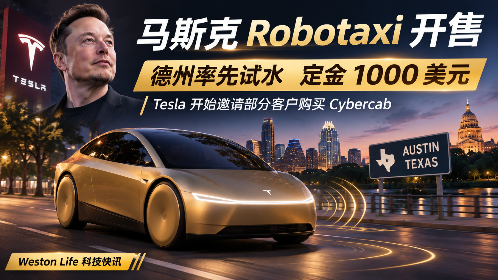

马斯克 Robotaxi 开售：德州率先试水，1000美元定金，但买了就能运营吗？
特斯拉开始邀请部分客户购买金色 Cybercab。车辆的价格已受到关注，不过“个人购买”与“作为无人出租车对外接单赚钱”是两回事。

只有获邀客户可以先买
11月13日，特斯拉表示，开始邀请一部分客户购买专门为自动驾驶设计的 Cybercab，用于个人使用。这款双座车型没有传统方向盘和踏板，早已作为 Tesla Robotaxi 项目的一部分在部分地区进行有限运营。路透社报道确认了“向部分客户开放个人购买”的消息；定价与订阅细节来自公开的订购页面报道。
1000美元不是售价，车价也不是全部支出
根据已公开的订购页面信息，Cybercab 标价为29,990美元（税前）；客户需要支付1,000美元不可退还定金。为了让车辆运行，还需要每月299美元的 Autonomy Subscription（自动驾驶订阅），首月包含在内；定期维护也被列为使用要求。相关价格和条件仍以特斯拉最终向客户提供的合同为准。
德州奥斯汀率先交付，但运营范围受限
早期订购资料显示，首批交付预计从2026年12月在德州奥斯汀展开。Cybercab 目前不能像普通汽车那样随意开往全美各地，运行受特斯拉获准的区域及服务条件限制。实际交付时间、可运行地点和保险、监管要求，仍需以官方最新条款为准。
为什么这是一条值得关注的新闻？
特斯拉过去主要通过自己的 Robotaxi 服务推出无人驾驶乘车体验。如今开始向少数个人买家开放 Cybercab，意味着“私人拥有、依靠订阅运行”的新型汽车商业模式正在试水。不过，收入前景、使用自由度以及后续责任分配仍有很多问题需要观察。
English Summary
Tesla has begun inviting select customers to buy its Cybercab for personal use. Reports of the invitation-only order page show a $29,990 pre-tax price, a $1,000 non-refundable deposit and a required $299 monthly autonomy subscription. Initial deliveries are targeted for Austin, Texas. Personal ownership does not automatically authorize commercial ride-hailing operations, and geographic, contractual and regulatory restrictions remain.
- Reuters — Tesla invites select customers to buy Cybercab for personal use (Nov. 14, 2026)
- Electrek — Pricing, deposit and autonomy subscription (Nov. 13, 2026)
- Tesla — Cybercab FAQs
- Tesla — Robotaxi fleet interest form
本文基于发布时可核实的公开资料整理；相关服务条款、价格和地区可能变化。